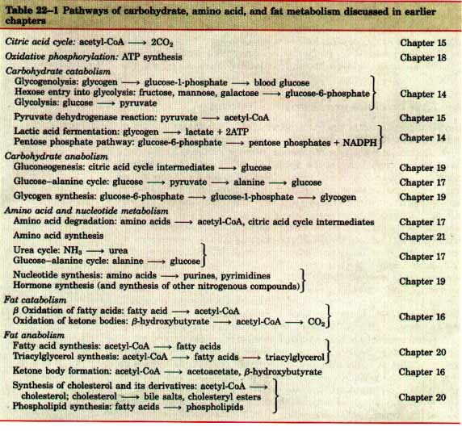
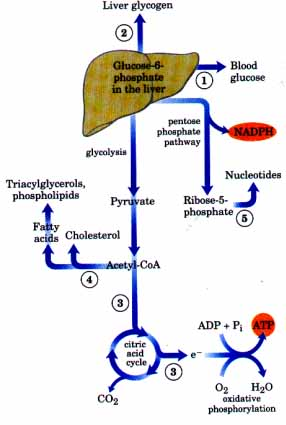
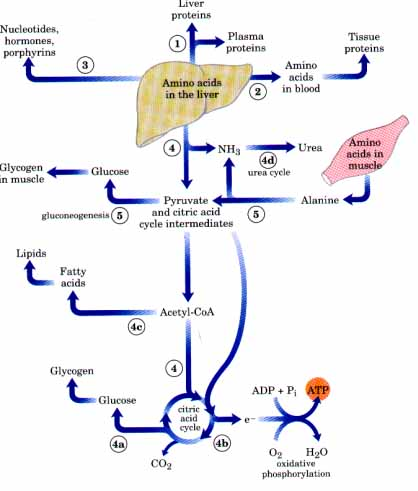
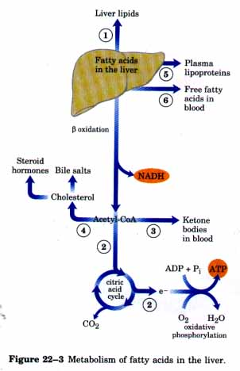

In Chapters 13 through 21 we have discussed metabolism at the level of the individual cell, emphasizing those pathways common to almost all cells, prokaryotic and eukaryotic. We have seen how metabolic processes in single cells are regulated at the level of individual enzymes by substrate availability, by allosteric mechanisms, and or by phosphorylation or other covalent modifications of the enzyme molecules.
To appreciate fully the significance of individual metabolic pathways and their regulation, we must view these pathways in the context of the whole organism. An essential characteristic of multicellular organisms is cell differentiation and division of labor. In addition to the central pathways of energy-yielding metabolism that occur in all cells, the tissues and organs of complex organisms such as humans have specialized functions and thus characteristic fuel requirements and patterns of metabolism. Hormonal signals integrate and coordinate the metabolic activities of different tissues and bring about the optimal allocation of fuels and precursors to each organ. In this chapter our focus is on mammals, and we deal with two distinct but interrelated themes: (1) the specialized metabolism of several major organs and tissues and the integration of metabolism in the whole organism, and (2) the structure and action of the hormones that regulate these metabolic processes.
We begin by examining the distribution of nutrients to various tissues and organs-in which liver plays a central role-and the metabolic cooperation among these tissues and organs. After reviewing the major classes of hormones, we consider the means by which they coordinate the diverse metabolic activities of the organism. The chapter concludes with a description of the fundamental mechanisms by which hormones and neurotransmitters interact with cellular receptors to alter and integrate metabolism.
Each tissue and organ of the human body has a specialized function that is reflected in its anatomy and its metabolic activity. Skeletal muscle, for example, uses metabolic energy to produce motion; adipose tissue stores and releases fats, which serve as fuel throughout the body; the brain pumps ions to produce electrical signals. The liver plays a central processing and distributing role in metabolism and furnishes all the other organs and tissues with a proper mix of nutrients via the bloodstream. The functional centrality of the liver is indicated by the common reference to all other tissues and organs as "extrahepatic" or "peripheral." We therefore begin our discussion of the division of metabolic labor by considering the transformations of carbohydrates, amino acids, and fats in the mammalian liver. This is followed by brief descriptions of the major metabolic functions of adipose tissue, muscle, the brain, and the tissue that interconnects all others: the blood.
During digestion in the gastrointestinal tract of mammals, the three major classes of nutrients (carbohydrates, proteins, and lipids) undergo enzymatic hydrolysis into their monomeric subunits. This breakdown is necessary because the epithelial cells lining the intestinal lumen are able to absorb only relatively small molecules. Many of the fatty acids and monoacylglycerols released by digestion in the intestine are reconverted within these epithelial cells into triacylglycerols (Chapter 16).
After being absorbed, most of the sugars and amino acids and some triacylglycerols pass to the blood and are taken up by hepatocytes in the liver; the remaining triacylglycerols take a different path via the lymphatic system and enter adipose tissue. Hepatocytes transform the nutrients obtained from the diet into the fuels and precursors required by each of the tissues, and export them in the blood. The kinds and amounts of nutrients supplied to the liver vary with several factors, including the diet and the time interval between meals. The demand of the extrahepatic tissues for fuels and precursors varies among organs and with the activity of the organism. To meet these changing circumstances, the liver has remarkable metabolic flexibility. For example, when the diet is rich in protein, hepatocytes contain high levels of enzymes for amino acid catabolism and gluconeogenesis. Within hours after a shift to a high-carbohydrate diet, the levels of these enzymes drop and the synthesis of enzymes essential to carbohydrate metabolism begins. Other tissues also adjust their metabolism to the prevailing conditions, but none is as adaptable as the liver, and none is so central to the organism's overall metabolic activities. What follows is a survey of the possible fates of sugars, amino acids, and lipids that enter the liver from the bloodstream. To help you recall the metabolic transformations discussed here, Table 22-1 (p. 738) shows the major pathways and processes to which we will refer and the chapter in which each pathway is discussed in detail.

| Sugars Glucose
entering the liver is phosphorylated by glucokinase to
yield glucose-6-phosphate. Fructose, galactose, and
mannose, absorbed from the small intestine, are also
converted into glucose-6-phosphate by enzymatic pathways
examined earlier. Glucose-6-phosphate is at the
crossroads of carbohydrate metabolism in the liver. It
may take any of five major metabolic routes (Fig. 22-1),
depending on the current metabolic needs of the organism.
By the action of various allosterically regulated
enzymes, and through hormonal regulation of enzyme
synthesis and activity, the flow of glucose is directed
into one or more of these pathways in the liver. 1. Glucose-6-phosphate is dephosphorylated by glucose-6-phosphatase to yield free glucose (p. 605), which is exported to replenish blood glucose. Export is the pathway of choice when the amount of glucose-6-phosphate is limited, because the blood glucose concentration must be kept sufficiently high (4 mM) to provide adequate energy for the brain and other tissues. 2. Glucose-6-phosphate not immediately needed to form blood glucose is converted into liver glycogen. 3. Glucose-6-phosphate may be oxidized for energy production via glycolysis, decarboxylation of pyruvate (by the pyruvate dehydrogenase reaction), and the citric acid cycle. The ensuing electron transfer and oxidative phosphorylation yield ATP. (Normally, however, fatty acids are the preferred fuel for energy production in hepatocytes.) 4. Excess glucose-6-phosphate not used to make blood glucose or liver glycogen is degraded via glycolysis and the pyruvate dehydrogenase reaction into acetyl-CoA, which serves as the precursor for the synthesis of lipids: fatty acids, which are incorporated into triacylglycerols and phospholipids, and cholesterol. Much of the lipid synthesized in the liver is exported to other tissues, carried there by blood lipoproteins. 5. Finally, glucose-6-phosphate is the substrate for the pentose phosphate pathway, yielding both reducing power (NADPH), needed for the biosynthesis of fatty acids and cholesterol, and D-ribose-5-phosphate, a precursor in nucleotide biosynthesis. |
 Figure 22-1 Metabolic pathways for glucose-6-phosphate in the liver. Here and in the following figures, anabolic pathways are shown leading upward, catabolic pathways leading downward, and distribution to other organs horizontally; the numbered processes correspond to descriptions in the text.
|
Amino Acids Amino acids that enter the liver have several important metabolic routes (Fig. 22-2). l. They act as precursors for protein synthesis in hepatocytes, a process discussed in Chapter 26. The liver constantly renews its own proteins, which have a very high turnover rate, with an average half life of only a few days. The liver is also the site of biosynthesis of most of the plasma proteins of the blood. 2. Alternatively, amino acids may pass from the liver into the blood and thus to other organs, to be used as precursors in the synthesis of tissue proteins. 3. Certain amino acids are precursors in the biosynthesis of nucleotides, hormones, and other nitrogenous compounds in the liver and other tissues. 4. Amino acids not needed for biosynthesis of proteins and other molecules in the liver or elsewhere are deaminated and degraded to yield acetyl-CoA and citric acid cycle intermediates. Citric acid cycle intermediates so formed may be converted into glucose and glycogen via the gluconeogenic pathway ( 4a ).Oetyl-CoA may be oxidized via the citric acid cycle for ATP energy ( 4b ), or it may be converted into lipids for storage (. 4c ). The ammonia released on degradation of amino acids is converted by hepatocytes into the excretory product, urea ( 4d ). Finally, the liver participates in the metabolism of amino acids arriving intermittently from the peripheral tissues. The blood is adequately supplied with glucose just after the digestion and absorption of dietary carbohydrate or, between meals, by the conversion of some of the liver glycogen into blood glucose. But in the period between meals, especially if prolonged, there is some degradation of muscle protein to amino acids 5. These amino acids donate their amino groups (by transamination) to pyruvate, the product of glycolysis, to yield alanine, which is transported to the liver and deaminated. The resulting pyruvate is converted by hepatocytes into blood glucose (via gluconeogenesis), and the NH3 is converted into urea for excretion. The glucose returns to the skeletal muscles to replenish muscle glycogen stores. One benefit of this cyclic process, the glucose-alanine cycle (see Fig. 17-9), is the smoothing out of fluctuations in blood glucose in the periods between meals. The amino acid deficit incurred in the muscles is made up after the next meal from incoming dietary amino acids. |
 Figure 22-2 Metabolism of amino acids in the liver.
|
| Lipids The
fatty acid components of the lipids entering hepatocytes
also have several different pathways (Fig. 22-3). 1.
Fatty acids are converted into liver lipids. 2. Under
most circumstances, fatty acids are the major oxidative
fuel in the liver. Free fatty acids may be activated and
oxidized to yield acetyl-CoA and NADH. The acetyl-CoA is
further oxidized via the citric acid cycle to yield ATP
by oxidative phosphorylation. 3. Excess acetyl-CoA
released on oxidation of fatty acids and not required by
the liver is converted into the ketone bodies,
acetoacetate and D-β-hydroxybutyrate, which are
circulated in the blood to peripheral tissues, to be used
as fuel for the citric acid cycle. The ketone bodies may
be regarded as a transport form of acetyl groups. They
can supply a significant fraction of the energy in some
peripheral tissues, up to one-third in the heart, and 60
to 70% in the brain during prolonged fasting. 4. Some of
the acetyl-CoA derived from fatty acids (and from
glucose) is used for the biosynthesis of cholesterol,
which is required for membrane biosynthesis. Cholesterol
is also the precursor of all steroid hormones and of the
bile salts, which are essential for the digestion and
absorption of lipids. The final two metabolic fates of lipids involve specialized mechanisms for the transport of insoluble lipids in the blood. 5. Fatty acids are converted to the phospholipids and triacylglycerols of the plasma lipoproteins, which carry lipids to adipose (fat) tissue for storage as triacylglycerols. Cholesterol and cholesteryl esters are also transported as lipoproteins. 6. Some free fatty acids become bound to serum albumin and are carried in the blood to the heart and skeletal muscles, which absorb and oxidize free fatty acids as a major fuel. Serum albumin is the most abundant plasma protein; one molecule of serum albumin can carry up to 10 molecules of free fatty acid, releasing them at the consuming tissue where they are taken up by passive diffusion. Thus, the liver serves as the body's distribution center: exporting nutrients in the correct proportions to the other organs, smoothing out fluctuations in metabolism caused by the intermittent nature of food intake, and processing excess amino groups into urea and other products to be disposed of by the kidneys. In addition to the processing and distribution of carbohydrates, fats, and amino acids, the liver is also active in the enzymatic detoxification of foreign organic compounds, such as drugs, food additives, preservatives, and other possibly harmful agents with no food value. Detoxification usually involves the cytochrome P-450-dependent hydroxylation of relatively insoluble organic compounds to make them sufficiently soluble for further breakdown and excretion (see Box 20-1). |

|